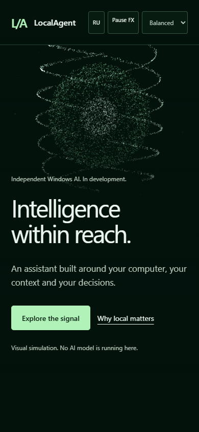
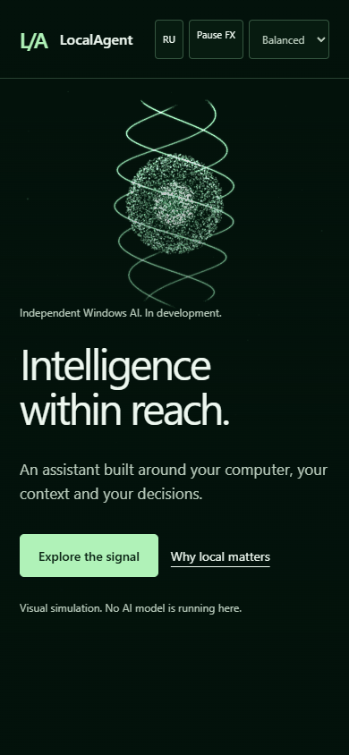
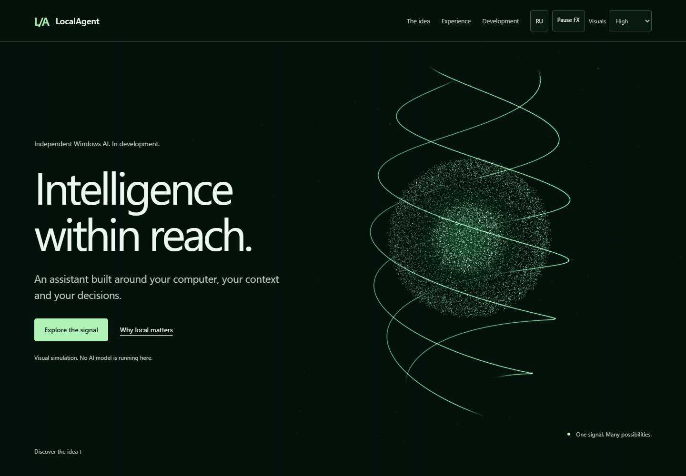
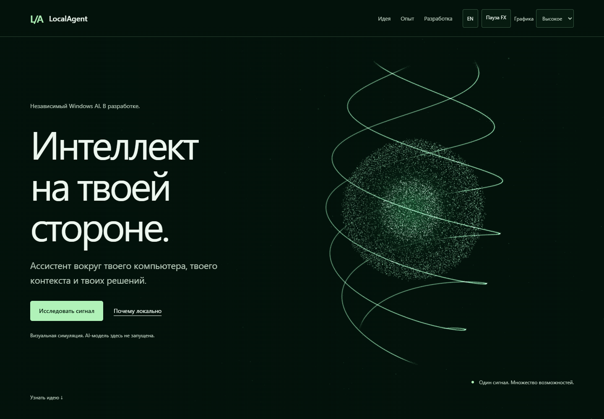
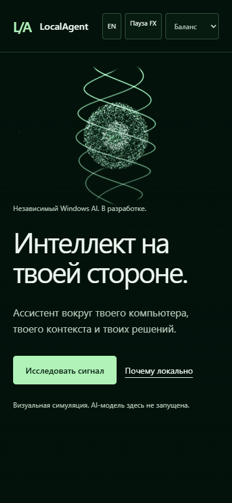

Работающая страница · Предыдущий morph / V2
Один renderer, одна камера и один RAF. Точечное ядро, тонкие непрерывные эмиссионные 3D-ленты и локальное мягкое свечение. Слои лент плавно исчезают по весу sphere при morph; частицы сохраняют ID и продолжают переход.





Chrome, реальные state buttons, две фазы сферы, morph и обратный native scroll. Desktop High / Mobile Balanced. Полная страница записана Playwright25fps, без интерполяции.
Local smoke · Sphere + ribbons GPU samples. Automated source/local review не заменяет визуальное утверждение владельца. Hosted CI NOT RUN; no merge/publication.